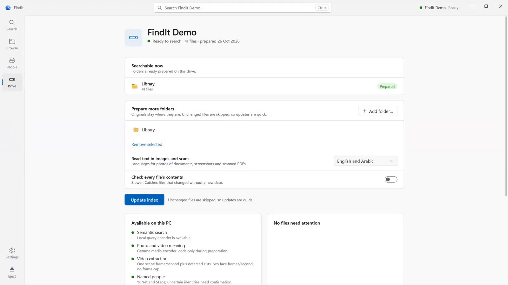

Search your drive the way you remember.
Photos, videos and documents, found by what's in them. Offline, on the drive itself.
A sample drive, searched right here in your browser. Nothing is uploaded.
One search for everything you keep.
It all lives on the drive.
Prepare it once. Plug it into any Windows PC and search. Nothing to install, no internet, no account.

- Originals untouchedNever modified, moved or uploaded.
- Truly offlineNo telemetry, no accounts, no cloud.
- Crash-safeA complete index is always kept.
- Honest resultsEvery match says why it matched.
FindIt for Windows
Windows 10 and 11 · x64 · Free and open source
Download 0.1.0-preview.9SHA-256 Release notes Source code Validation status
Development preview. Extract it to the root of an external drive and open FindIt.exe. Not code-signed yet, so Windows may ask you to confirm.